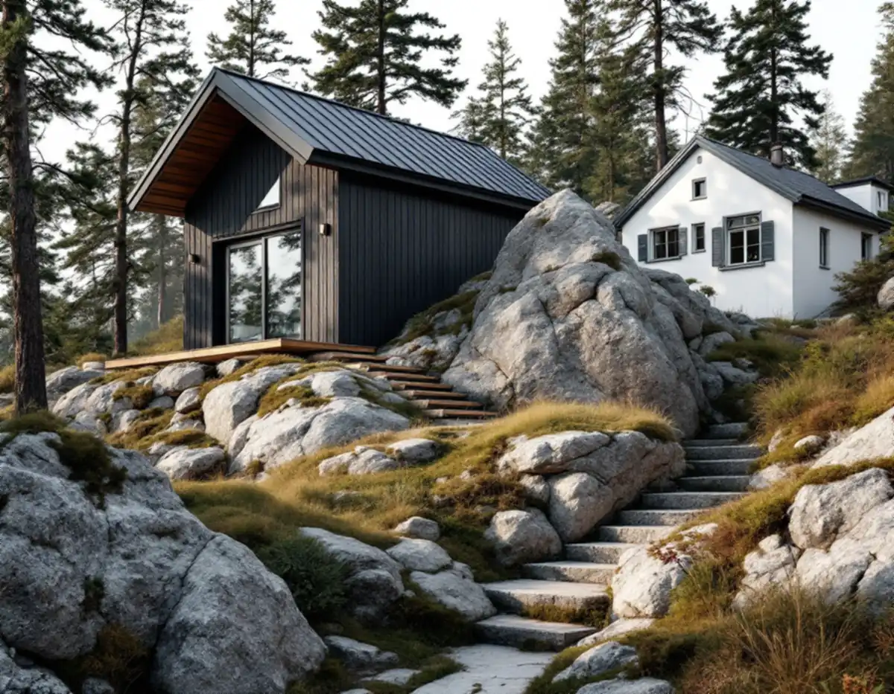
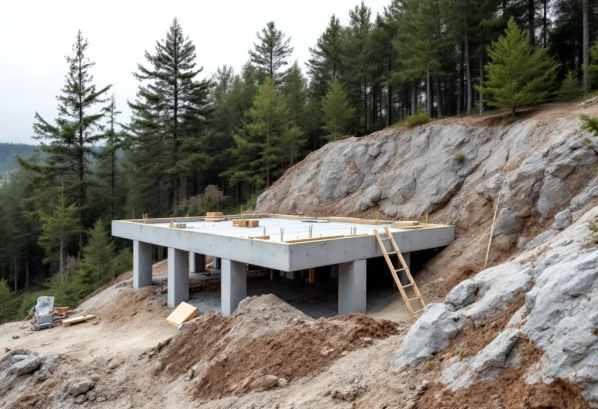
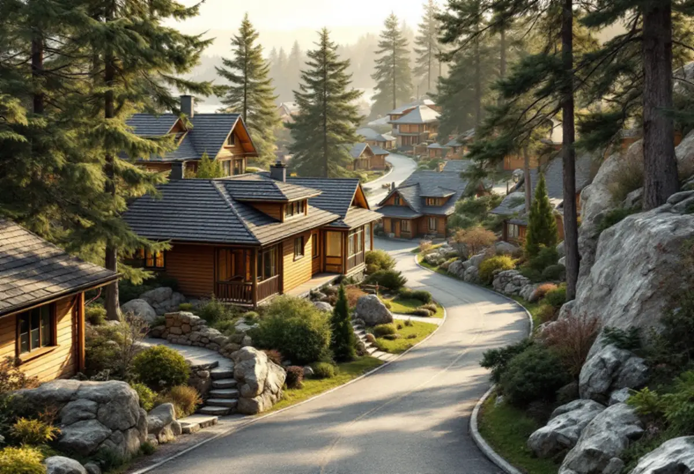

Kartan
Vi kontrollerar Stadsmuseets klassificering för fastigheten och villan.
Mälarhöjden och villorna på Hägerstensåsen ligger på kuperad mark, och det märks när ett gårdshus ska placeras och kopplas till vatten och avlopp. Geal Entreprenad AB börjar med kartan och terrängen och bygger sedan komplementbostadshuset nyckelfärdigt.

Stadens vägledning Varsam utveckling av småhus- och villaområden beskriver hur villasamhällen som Mälarhöjden växte upp genom privata initiativ efter större markförvärv. I vägledningens tabell står Mälarhöjden både som kulturhistoriskt värdefull miljö och som område med generösa byggrätter. Områdesfakta för 2025 räknar 988 småhus med äganderätt i Mälarhöjden.
Generösa byggrätter betyder att detaljplanen ofta tillåter mycket, men det säger inget om lovplikten. Om tomten ligger inom en grön eller blå ring i Stadsmuseets klassificeringskarta, eller om villan är markerad med blått eller grönt, krävs bygglov även för ett komplementbostadshus som annars är lovfritt. Vi kontrollerar kartan för just din fastighet först.

Vägledningen lyfter fram att villastädernas hus är anpassade till terrängen, ofta med fritt liggande hus i trädgårdar och höjdpartier som lämnats obebyggda. Den nämner också att en tillbyggd villa i Mälarhöjden är ett exempel på hur förändringar kan smälta in. Ett gårdshus på en sluttning behöver därför få en grund som följer marken i stället för stora utfyllnader och stödmurar.
Vi tittar på var berget går i dagen, var marken är lös och hur regnvattnet rinner, och vi räknar med att material kan behöva bäras upp för trappor och branter. Ett hus som placeras högt upp på tomten kan få fin utsikt, men det kräver ofta en längre och dyrare väg för ledningarna. På Hägerstensåsen byggdes enligt Stadsmuseet villor på åsens norra del medan staden byggde smalhus på sin mark, så tomterna där varierar mycket.
Stockholm Vatten och Avfall påpekar att vattentrycket kan bli sämre om en ny byggnad ligger högre upp och längre bort från förbindelsepunkten vid tomtgränsen. På en kuperad tomt i Mälarhöjden är det en verklig fråga. Den nya vattenledningen ska kopplas efter vattenmätaren i villan, och spillvattnet ska gå till den befintliga spillvattenledningen inom tomten – gärna via en rensbrunn.
Om huset ligger lägre än villans avlopp kan det i stället behövas en pump. Därför ritar vi höjderna innan servisanmälan skickas, och den ska ha en ritning över ledningsdragningen. Har huset både kök eller pentry och toalett räknas det som en egen bostad i VA-taxan, och då tillkommer en avgift innan inkopplingen.
Ett lovfritt komplementbostadshus får enligt staden strida mot detaljplanen och stå på prickmark, men det ska hålla 4,5 meter till gränsen mot granne, samfällighet och allmän plats om inte berörda har gett ett skriftligt medgivande. Mot gatu- och parkmark är det oftast staden som är huvudman. Huset ska också vara högst 30,0 kvadratmeter, 4,0 meter i nock och mindre än villan, och alla lovfria gårdshus på tomten får tillsammans vara högst 45,0 kvadratmeter.
Installationer av vatten, avlopp, ventilation eller eldstad ska anmälas, och arbetet får börja först efter startbesked. Hur större utbyggnader av själva villan prövas beskriver vi under tillbyggnad i Hägersten, och lagtexten finns sammanfattad i reglerna för attefallshus.

Vi kontrollerar Stadsmuseets klassificering för fastigheten och villan.
Höjder, berg och vattnets väg mäts in vid ett gratis platsbesök.
Vatten och avlopp ritas med höjder och skickas med servisanmälan.
Installationer anmäls; bygglov söks där miljön kräver det.
Grund anpassad till marken, stomme, tak och installationer.
Huset används när slutbeskedet har kommit.
Skatteverket skriver att det inte går att få rotavdrag för att bygga en helt ny bostad, och inte heller för ett nytt hus, en friggebod, ett garage eller en liknande fristående byggnad. Ett komplementbostadshus står fritt på tomten, så kostnadsförslaget för huset räknas utan avdrag.
Grundläggning på berg eller i sluttning, avståndet och höjdskillnaden till ledningarna, eventuell pump, om bygglov behövs, kök och badrum samt hur material kan bäras upp på tomten. Efter ett gratis platsbesök får du ett skriftligt kostnadsförslag.
Komplementbostadshus på tomten.
Attefallshus →Takbyte, takbesiktning och plåtarbeten.
Takläggare i Hägersten →Mälarhöjden, Hägerstensåsen och tre epoker av villor.
Takrenovering i Hägersten →Bostadsrätten, golvbrunnen och fallet.
Badrumsrenovering i Hägersten →Kuperad tomt, stödmur och dränering.
Byggföretag i Hägersten →Trävillor, färglager och skonsam färgborttagning.
Fasadmålning i Hägersten →Småstugor, typritningar och panel.
Fasadrenovering i Hägersten →Villorna, kartan och spröjsen.
Fönsterbyte i Hägersten →Fönster från olika epoker.
Fönsterrenovering i Hägersten →Golv i källare och suterrängvåning.
Golvläggare i Hägersten →Slipa och spara parketten i en äldre lägenhet.
Golvslipning i Hägersten →Efterkrigstidens lägenheter och asbestprov.
Köksrenovering i Hägersten →Lägenheter, villor vid Mälaren och radhus.
Målare i Hägersten →Låglutande tak och takavvattning i Hägersten.
Plåtslagare i Hägersten →Verandor, dörrar och snickeridetaljer på villan.
Snickare i Hägersten →Samma material eller ett nytt.
Takbyte i Hägersten →Villastad, radhuslänga och brandskydd.
Tillbyggnad i Hägersten →